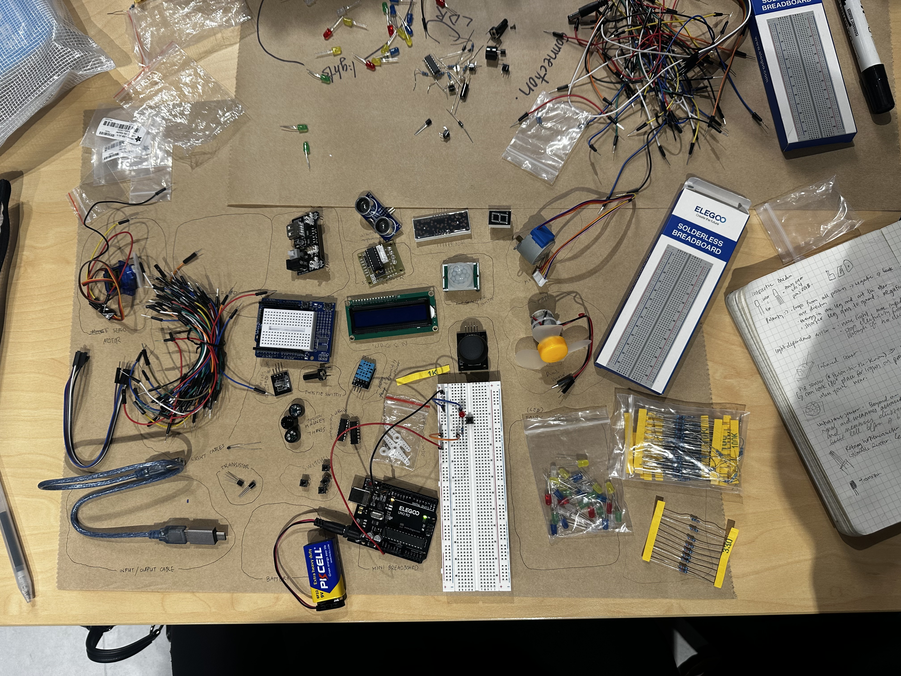
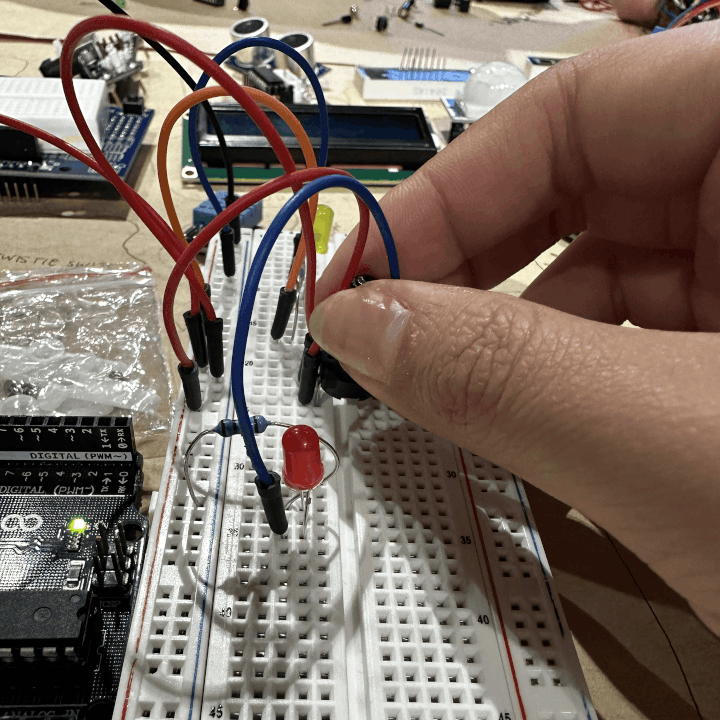
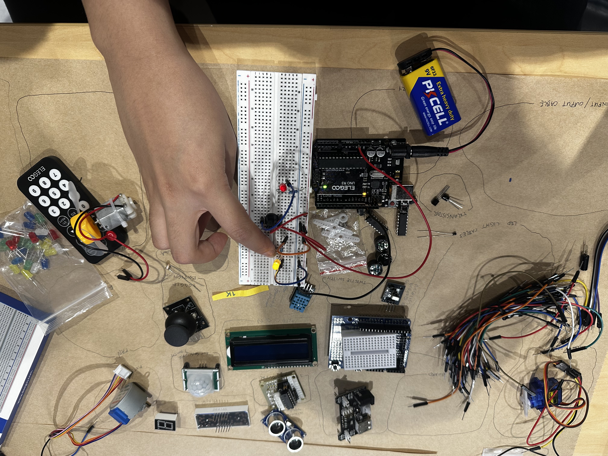

Content for Week 6 goes here.
Here is an overview of the different parts of an Arduino, which I created using Tinkercad.

My LED circuit, which I created using Tinkercad. The LED is connected to pin 13, and the resistor is connected to the ground.

My LED circuit, which I created using Tinkercad. The LED is connected to pin 13, and the resistor is connected to the ground.
